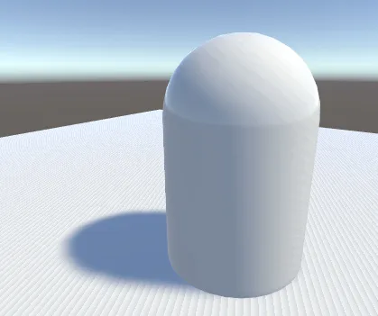
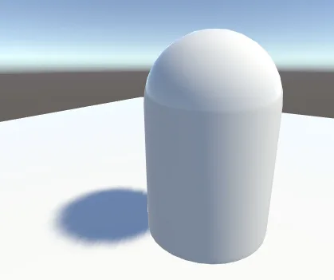
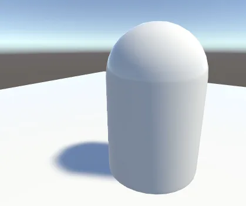
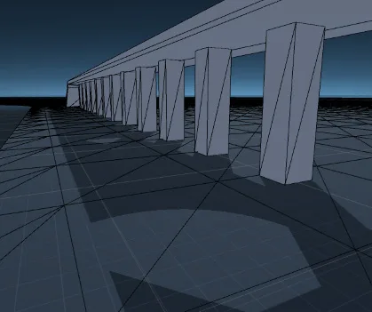
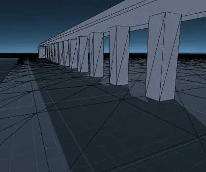
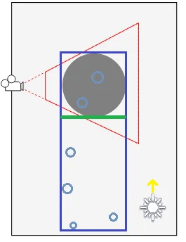
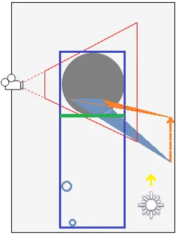

Important: The Built-In Render Pipeline is deprecated and will be made obsolete in a future release.
It remains supported, including bug fixes and maintenance, through the full Unity 6.7 LTS lifecycle.
For more information on migration, refer to Migrating from the Built-In Render Pipeline to the Universal Render Pipeline and Render pipeline feature comparison.
Shadows might flicker if they’re far away from the camera. Refer to Understanding the View Frustum for more information.
If shadows are closer to the camera than the world space origin, enable camera-relative culling. Unity uses the camera as the relative position for shadow calculations instead of the world space origin, which reduces flickering.
To enable camera-relative culling, follow these steps:
Rendering real-time shadows has a high performance impact. Any GameObjects that might cast shadows must first be rendered into the shadow map and then that map is used to render objects that might receive shadows.
Soft shadows have a greater rendering overhead than hard shadows, but this only affects the GPU and does not cause much extra CPU work.
If rendering real-time shadows for complex geometry is prohibitively expensive, consider using low LOD meshes or even primitives to cast shadows.
If this is too resource-intensive, you can fake shadows using a blurred texture applied to a simple mesh or quad underneath your characters, or can create blob shadows with custom shaders.
A surface directly illuminated by a light sometimes appears to be partly in shadow. This is because pixels that should be exactly at the distance specified in the shadow map are sometimes calculated as being further away (this is a consequence of using shadow filtering, or a low-resolution image for the shadow map). The result is arbitrary patterns of pixels in shadow when they should be lit, giving a visual effect known as “shadow acne”.

By adjusting the shadow bias values you can reduce or eliminate such shadow artifacts as shadow acne, shadow detachment (also known as peter-panning), light leaking, and self-shadowing.
In the Built-in Render Pipeline, you can set these values with the Bias and Normal Bias properties in the Light Inspector window when shadows are enabled.
Do not set the Bias value too high, because areas around a shadow near the GameObject casting it are sometimes falsely illuminated. This results in a disconnected shadow, making the GameObject look as if it is flying above the ground.

Likewise, setting the Normal Bias value too high makes the shadow appear too narrow for the GameObject:

In some situations, Normal Bias can cause an unwanted effect called light bleeding, where light bleeds through from nearby geometry into areas that should be shadowed. A potential solution is to open the GameObject’s Mesh RendererA mesh component that takes the geometry from the Mesh Filter and renders it at the position defined by the object’s Transform component. More info
See in Glossary and change the Cast Shadows property to Two Sided. This can sometimes help, although it can be more resource-intensive and increase performance overhead when rendering the Scene.
The bias values for a light may need tweaking to make sure that unwanted effects don’t occur. It is generally easier to gauge the right value by eye rather than attempting to calculate it.


To further prevent shadow acne we are using a technique known as Shadow pancaking. The idea is to reduce the range of the light space used when rendering the shadow map along the light direction. This leads to an increased precision in the shadow map, reducing shadow acne.

In the above diagram:
Clamp these shadow casters to the near clip plane of the optimized space (in the Vertex Shader). Note that while this works well in general, it can create artifacts for very large triangles crossing the near clip plane:

In this case, only one vertex of the blue triangle is behind the near clip plane and gets clamped to it. However, this alters the triangle shape, and can create incorrect shadowing.
You can tweak the Shadow Near Plane Offset property from the Quality window to avoid this problem. This pulls back the near clip plane. However, setting this value very high eventually introduces shadow acne, because it raises the range that the shadow map needs to cover in the light direction. Alternatively, you can also tesselate the problematic shadow casting triangles.
If you find that one or more objects are not casting shadows then you should check the following points:
Real-time shadows can be disabled completely in the Quality window. Make sure that you have the correct quality level enabled and that shadows are switched on for that setting.
All Mesh Renderers in the scene must be set up with their Receive Shadows and Cast Shadows correctly set. Both are enabled by default, but check that they haven’t been disabled unintentionally.
Only opaque objects cast and receive shadows, so objects using the built-in Transparent or Particle shaders will neither cast nor receive. Generally, you can use the Transparent Cutout shaders instead for objects with “gaps” such as fences, vegetation, etc. Custom ShadersA program that runs on the GPU. More info
See in Glossary must be pixel-lit and use the Geometry render queue.
Objects using VertexLit shaders can’t receive shadows, but they can cast them.
Unity can’t calculate shadows for GameObjects that have materials with “Unlit” type shaders. Unity can only calculate shadows for materials with shaders that support lighting.
In the Built-in Render Pipeline, using the Forward rendering path, some shaders allow only the brightest directional light to cast shadows (in particular, this happens with Unity’s built-in shaders from 4.x versions). If you want to have more than one shadow-casting light then you should use the Deferred ShadingA rendering path in the Built-in Render Pipeline that places no limit on the number of Lights that can affect a GameObject. All Lights are evaluated per-pixel, which means that they all interact correctly with normal maps and so on. Additionally, all Lights can have cookies and shadows. More info
See in Glossary rendering path instead. You can enable your own shaders to support “full shadows” by using the fullforwardshadows surface shaderA streamlined way of writing shaders for the Built-in Render Pipeline. More info
See in Glossary directive.